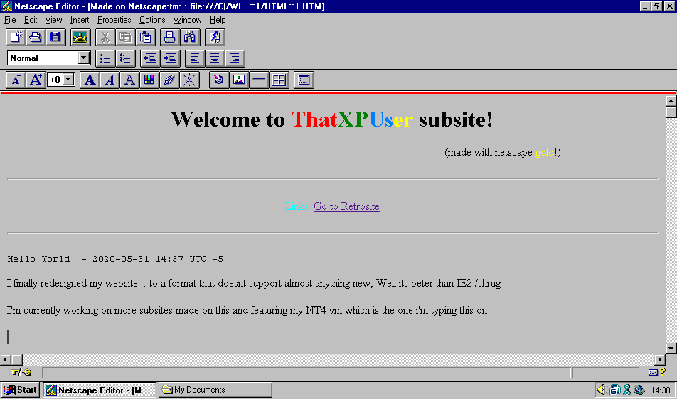

Links: Go to Retrosite
Updated IE - 2020-05-31 Starting time: 16:52 Finish time: 17:09 (UTC -5)
NT came with Internet Explorer 2 which is kinda crap most of the websites didnt load and if they did it would be a bad request. I downloaded IE4 which made nt more ugly ngl. It installed Active Desktop which is nice it came bundled with some weird tv channels thing then i found out
IT LITTERALLY UGH IDK HOW TO EVEN DESCRIBE MY ANGER
it also really looks like ie updates update your whole kernel
Hello World! - 2020-05-31 Starting time: 14:37 Finish time: 15:33 (UTC -5)
I finally redesigned my website... to a format that doesnt support almost anything new, Well its beter than IE2 /shrug
I'm currently working on more subsites made on this and featuring my NT4 vm which is the one i'm typing this on
